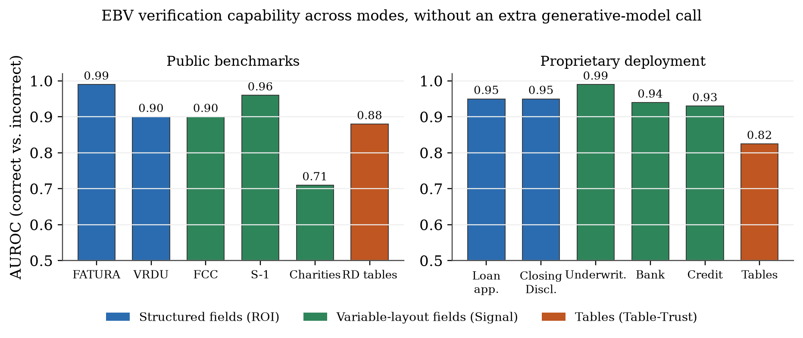
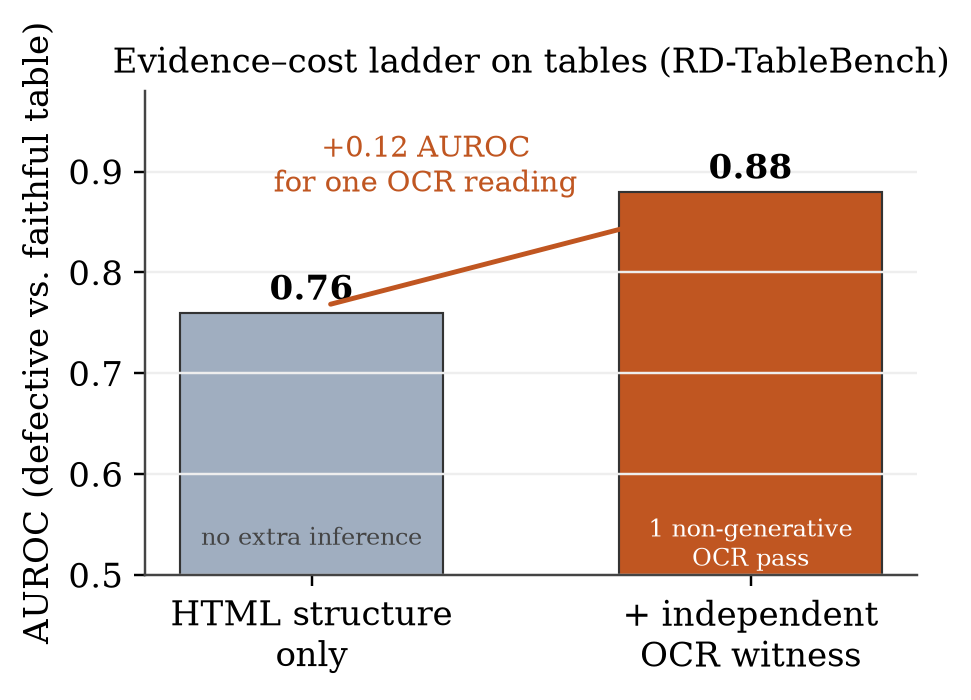

Cheap Evidence, Hard Errors:
Verifying Document Extraction Without Another Generative-Model Call
Abstract
Document information-extraction systems are deployed at scale, but their outputs still need checking before they can be processed without a human. The dominant way to decide which outputs to trust is to spend another model call—a second large-language-model pass or a vision-language comparison—which is exactly the cost a production pipeline is trying to avoid. We ask how far cheap, in-document evidence goes instead. We present Evidence-Based Verification (EBV), a single verifier that scores extracted fields and tables using only evidence the pipeline already produced—spatial geometry for structured fields, text signals for free-form fields, and grid structure for tables—with no additional generative (LLM/VLM) call, and with one optional, lightweight, non-generative OCR pass as an independent witness for table content. Across public benchmarks for structured fields, variable-layout fields, and tables, and on a proprietary multi-type mortgage corpus, EBV ranks correct over incorrect extractions with AUROC 0.71–0.99 (the low end a hard long-document domain) and catches 75–100% of errors at its operating point, above the zero-cost signals already in a pipeline (a per-field prior, 0.63; value-in-source, ≤0.59; and the extractor's own token-logprobs, which published results put at ≈0.58–0.64). We then characterise what cheap evidence cannot catch: one independent OCR witness adds +0.12 AUROC on tables that structure alone misses, an empty-field prior is the single most load-bearing feature on free-form fields, and a small residual of confidently-wrong outputs—≈1.5% of non-empty field errors and 10.6% of table errors—survives every cheap channel. These hard errors share one signature: a value or grid that is internally consistent but placed wrong (a cross-field copy, a correct-looking value from the wrong place). None are source-ambiguous—the evidence to catch them is in the document—so this is a cost/coverage frontier, and we report where an extra reading becomes worth paying for.
1Introduction
Modern document pipelines extract hundreds of fields and tables per document with large language and vision-language models, then face a question the extractor does not answer: which outputs can be processed automatically, and which must a person check? In production the cost that matters is human review time, and the lever is a verifier that auto-accepts what it can vouch for and routes the rest. The verifier's own cost is easy to overlook: the common recipe—re-prompting the extractor, sampling it, or running a second vision-language model to re-read the page—adds a generative inference per decision, the very expense the pipeline was built to avoid.
We take the opposite stance and ask a narrow, deployment-driven question: how much of an extractor's errors can be caught using only evidence the pipeline already has, without another generative-model call? The evidence we allow is cheap and on hand—the OCR tokens and coordinates, the extracted value and its field name, and the extracted table's own structure—plus, optionally, a single pass of a lightweight OCR reader as an independent witness for table content. Nothing re-invokes a generative language or vision model.
We instantiate this as Evidence-Based Verification (EBV), one verifier with a single accept/route contract realised in three modes: a spatial verifier for structured (template) fields (ROI), a signal verifier for variable-layout fields (Signal), and a structural-and-content verifier for tables (Table-Trust). A document is auto-approved only when every unit is accepted; otherwise it is routed. We evaluate on public benchmarks spanning all three modes and on a proprietary multi-type mortgage corpus, using mid-tier open extractors as a realistic error source, and compare against the zero-cost confidence signals already present in a pipeline.
Our contributions:
- One cheap verifier across granularities under a no-generative-call budget. Unlike prior document verifiers—which operate on fields only, or (RaV-IDP) span granularities but fall back to a vision-language model—EBV scores structured fields, variable-layout fields, and tables under one accept/route contract with no additional generative call, beating the pipeline's free confidence signals, including published token-logprob baselines (§5).
- An evidence-cost ladder. We price what each tier of cheap evidence buys: on tables, HTML-structure-only verification reaches AUROC 0.76, and adding an independent OCR witness lifts it to 0.88 (+0.12)—a concrete recipe for when the extra reading is worth it (§5.2, §6).
- Deployment lessons practitioners can act on. We expose where the signal comes from—on free-form fields the empty-field prior is the single most load-bearing feature—and name, with frequencies and operating-point catch rates, the residual error families: the hard tail in every mode is a plausible-but-wrong output (cross-field copy, correct-looking value from the wrong place, content-preserving table scramble) that is internally consistent and so hardest to contradict. A small residual (≈1.5% of non-empty field errors, 10.6% of table errors) survives every cheap channel; none are source-ambiguous, so it is a cost frontier, not a wall (§6).
- A proprietary, real-deployment validation. On a proprietary mortgage corpus across five document types, EBV reaches AUROC 0.93–0.99 on fields and catches 31/34 table defects, while we report where it over-rejects and where coverage collapses under a very-high-error extractor (§5.3, §6).
Throughout we separate capability (how well the trust score ranks correct over incorrect, by AUROC) from the deployed decision (coverage at a fixed review budget), and calibrate thresholds on a held-out split so reported coverage reflects deployment, not hindsight.
2Related Work
Confidence estimation and selective acceptance for document extraction. A growing line attaches a confidence signal to document key-information-extraction (KIE) outputs to decide which fields auto-accept versus route. Early engines such as HYCEDIS (Nguyen et al., 2021) fuse OCR, box-localization and key–value signals through a conformal predictor, tied to a specific stack. Targeting LLM/VLM extractors, ExtractConf (Kumar, 2026) shows document- and OCR-grounded signals outperform raw token log-probabilities and fuses them with a gradient-boosted model; ConfBench (Roy et al., 2026) benchmarks VLM-confidence calibration under controlled degradations and reports token-logprob baselines in the 0.58–0.64 AUROC range on RealKIE-style fields; and Valid Per-Field Selective Risk Control (Gurram, 2026) adds distribution-free guarantees to the per-field decision. The closest system on the fields side, Perception–Layout–Validation (Jin et al., 2026), decomposes confidence into perception, layout, and validation channels and gates straight-through processing with conformal risk control, reporting AUROC 0.990–0.997 on FATURA. Most of these operate on fields only, and several spend at least one additional LLM or VLM call at decision time (e.g. Jin et al.'s two-VLM comparison). Our Signal verifier shares the tabular-fusion-over-document-signals idea with ExtractConf; our contribution is not that fusion but the single contract across tables and fields under a no-generative-call budget, with a baseline comparison and a detectability account.
Verification for tables, and across granularities. Table extraction has a separate literature. Uncertainty-aware table extraction (Ajayi et al., 2025) and structure-recognition UQ (Ajayi et al., 2024) flag unreliable cells by aggregating the pipeline's own structure/OCR confidence rather than verifying content against an independent reading; QUEST (Thomas et al., 2025) trains a dedicated quality model; DEC (Xiao et al., 2026) repairs table-parse errors with an agentic vision-model controller. RaV-IDP (Jha, 2026) spans text, tables and images with a label-free “reconstruction-as-validation” signal and a vision-language-model fallback—the generative call our budget forbids.
Selective prediction and detectability. Deciding to accept versus abstain is classical selective prediction (Chow, 1970; El-Yaniv and Wiener, 2010; Geifman and El-Yaniv, 2017, 2019), summarised by the risk–coverage curve; distribution-free guarantees on the accepted set come from conformal risk control (Angelopoulos and Bates, 2021). Rabanser and Papernot (2025) decompose the selective-classifier gap into additive terms including an irreducible floor; Pandey et al. (2026) show confident LLM-QA errors can be surface-indistinguishable from correct ones. We adapt the spirit to in-document evidence but scope our claims to an empirical, evidence-relative account—how the catchable set changes as cheap evidence is added—not a fundamental limit.
Reference-free QE and LLM uncertainty. Reference-free quality estimation scores a hypothesis from the source alone (Rei et al., 2020, 2022); LLM hallucination detectors—semantic entropy (Kuhn et al., 2023; Farquhar et al., 2024), SelfCheckGPT (Manakul et al., 2023), P(True) (Kadavath et al., 2022)—flag likely-wrong outputs through repeated sampling or self-evaluation, again at the cost of extra generative passes.
3Method
We call the system Evidence-Based Verification (EBV). It sits after extraction and, for every returned value, decides accept or route using only in-document evidence and existing pipeline artifacts—adding no generative inference. EBV has one decision contract (§3.1) realised by three mode-specific verifiers (§3.2–3.4) and a cost accounting (§3.5).
3.1Shared formulation
A pipeline reads document d and returns units U(d); a unit is a field (key–value) or a table (HTML grid). EBV outputs a(u) ∈ {accept, route}; accept means auto-processed, route means sent to a reviewer. The document is accepted iff every unit is: A(d)=accept iff a(u)=accept ∀u—one unverified value suffices to open the document. Mode is selected from an upstream structured-type label (EBV does no classification): tables → structural; structured-type fields → spatial; else → signal. Each verifier also records its per-channel evidence, the input to §6.
3.2Structured fields: spatial verification (ROI)
On a fixed template each field occupies a stable region. Offline, from that template's labelled split (a document-disjoint split within the template), EBV learns per field: a region of interest (outlier-trimmed union of the field's word boxes), a calibrated rule (weights over three spatial agreements and an accept threshold), and context keywords. Online, it maps the value to its box via OCR tokens (disambiguating repeats with keywords) and computes overlap, center distance and IoU with the ROI, combined into a calibrated weighted vote; strong keyword context gives a bounded boost, and a habitually-empty field is accepted when blank.
3.3Variable-layout (free-form) fields: signal verification (Signal)
Without a template, EBV reads field name, value and page text and computes six deterministic signals (no model call): format validity, keyword context, source context, value-in-text, label–value distance, and a partial-extraction penalty. Per document type it trains a small pair of tabular classifiers offline on that type's labelled split; a field is accepted only when both agree. For AUROC we rank by the classifier's continuous probability (mean of the pair); the accept/route decision is the pair-agreement at the deployed operating point. Two deterministic safeguards sit on top: hard gates (type mismatch, blatant cross-field copy, empty amount) and an empty-field prior (learned per field) that promotes a correctly-empty field from route to accept.
3.4Tables: structural verification (Table-Trust)
A table is an HTML grid; the verifier asks whether the grid is coherent and whether its text is faithful. Geometry checks logical validity (overlaps, holes, impossible spans). Structural plausibility checks the populated grid (per-row fill, header-to-column counts; flags over-segmented/phantom columns and mis-placed cells). Text conservation compares HTML cell text against an independent OCR reading of the table region (§3.5), flagging merges/drops. The trust score is a weighted average, reported with failure flags; a table is accepted when the score clears a threshold fixed on a disjoint calibration split. When no OCR witness is available the table is scored on geometry and structure only.
3.5Cost accounting
The verification adds no generative (LLM/VLM) call. The spatial verifier is deterministic geometry over OCR tokens the pipeline already produced. The signal verifier runs deterministic string/format checks scored by small local tabular classifiers (gradient-boosted trees), not a generative model. The table verifier runs deterministic structural checks and, for its text-conservation component, uses an independent OCR witness: a single pass of a lightweight, non-generative OCR engine (docTR) over the table region, distinct from the engine that produced the pipeline tokens. This witness is the one optional extra inference in the system; it is not a generative call and we price it explicitly on the evidence-cost ladder (§5.2). The only decision-time models are thus the local classifiers and this optional OCR pass—no new language- or vision-generative call is made, the property the paper quantifies.
4Experimental Setup
Datasets and modes. Structured fields: FATURA (synthetic templated invoices), VRDU Registration-Forms (real FARA filings, the real-document counterpart to synthetic FATURA). Variable-layout fields: RealKIE FCC invoices, SEC S-1 filings, UK charity reports—three domains with different layouts and base error rates. Tables: RD-TableBench. We also report a proprietary deployment corpus of mortgage documents across five types, exercising all three modes on one document pool.
Extractors as error source. The object of verification is an extractor's output, so we use open, self-hostable mid-tier extractors—NuExtract-3 (served locally) for fields and MinerU for tables—across datasets as the supplier of natural mistakes; they are not the systems under evaluation.
Ground truth and correctness. For fields, correctness is scored per mode: field-aware exact match for the structured (template) legs, and normalised bidirectional containment for the variable-layout legs—the latter credits legitimate formatting and paraphrase variation (e.g., “Acme Corp” vs “Acme Corporation”) that exact match would wrongly penalise. The gold value is the dataset label (on the proprietary corpus, the production system's human-verified value). For tables, ground truth is a GOOD/BAD judgement of HTML fidelity to the table in the page image (fused, truncated, or dropped values are defects). Two reporting details we state plainly: on FATURA, strict-exact scoring mislabels spatially-correct values whose string differs (type-A, 20.8% of raw errors); we relabel these as correct by containment and keep the genuine in-place errors (type-C, 3.8% of predictions), which places true capability in [0.865, 0.994]. On the Signal benchmarks we evaluate scalar (single-value) key–value fields, the primary targets of key-information extraction; repeated line-item fields are a separate table-style task. Splits are document-disjoint (and template-disjoint across templates); ROI and Signal verifiers are trained per document type on that type's calibration split—a labelled-data cost, not frozen cross-domain transfer.
Baselines. On the field benchmarks we compare EBV against the zero-cost signals a pipeline already has: a per-field emptiness prior (how often the field is blank), a value-in-source rule (does the value occur in the page), and the extractor's own token-logprobs. We take token-logprob performance from published benchmarks (ConfBench reports ≈0.58–0.64 AUROC on comparable fields) rather than recompute an established baseline.
Metrics and protocol. We report capability—AUROC of the trust score ranking correct over incorrect—and the deployed decision—coverage at a fixed ≤5% review budget (fraction auto-accepted while held-out error ≤5%; the threshold is chosen on a calibration split, and we report the realised test risk) for fields, and for tables bad-catch and false-reject at a precision-first threshold. We report base error rate and n for every number, with document-clustered bootstrap 95% CIs where a conclusion rests on them. AUROC uses a tie-aware estimator.
5Results

5.1Fields
Table 1 reports field verification (Figure 1 summarises AUROC across all three modes). EBV's trust score ranks correct over incorrect extractions above every zero-cost baseline where a baseline is measurable: the strongest baseline reaches only 0.63 (the per-field prior, on S-1), with value-in-source at 0.53–0.59 and published token-logprobs at 0.58–0.64—all below EBV's own 0.71–0.99. On FATURA, EBV reaches 0.994 at no extra call, matching the AUROC range reported for a fused multi-call system (0.990–0.997). The hard case is charity reports (0.71): long documents where a value's mere presence in page text is weakly diagnostic, and the one domain where the ≤5% budget is not quite met on test (realised risk 5.5%).
Table 1. Field verification. n (field decisions, scalar fields), base error rate, EBV fused AUROC with 95% CI (‡bound), zero-cost baselines, and coverage at a ≤5% review budget (realised test risk in parentheses). Dashes mark baselines not computed for the ROI legs; ROI coverage is empirical test coverage at ≤5% (no separate calibration split, hence no realised-risk figure). "n/a" marks a prior with no usable variance on that domain.
| Benchmark | Mode | n | base err | EBV AUROC (95% CI; ‡bound) | logprob† | prior | presence | cov@≤5% |
|---|---|---|---|---|---|---|---|---|
| FATURA | ROI | 36,370 | 23.5%‡ | 0.994 [0.865, 0.994]‡ | — | — | — | 70% |
| VRDU | ROI | 2,647 | 20.6% | 0.896 | — | — | — | 71% |
| FCC | Signal | 240 | 11.3% | 0.897 (0.83–0.96) | 0.58–0.64 | n/a | 0.53 | 81% (2.1%) |
| S-1 | Signal | 37,277 | 3.2% | 0.960 (0.95–0.97) | 0.58–0.64 | 0.63 | 0.59 | 100% (3.3%)¶ |
| Charities | Signal | 1,522 | 7.0% | 0.713 (0.66–0.77) | 0.58–0.64 | n/a | 0.53 | 79% (5.5%) |
†token-logprob AUROC is a published reference range (ConfBench, RealKIE-style), not computed on our split. ‡FATURA base error is under the A-handled correctness rule (spatially-correct type-A values relabelled correct; raw strict-exact error is 29.7%); the [0.865, 0.994] bracket is a capability bound (strict-exact lower, containment-tolerant upper), not a bootstrap CI. ¶S-1 base error (3.2%) is already below 5%, so accept-all meets the budget; a tighter budget is the meaningful one there.
5.2Tables and the evidence-cost ladder
On RD-TableBench the verifier is a precision-first catch classifier: on the full 460-table set (78% defective) it routes defective tables with bad-catch 0.90 at precision 0.81; on a 287-table subset (218 defective, 69 faithful) bad-catch is 0.84 at AUROC 0.88. We do not claim coverage on RD—at this defect rate there is little to auto-accept—so coverage is demonstrated on fields and the proprietary corpus, not here.
The central result is the evidence-cost ladder (Figure 2, Table 2). The deployed scorer outputs only the combined trust, so to separate the tiers we re-ran it on the 287-table subset—a representative sample sufficient for a stable AUROC—to emit each channel's score on its own: HTML-structure-only evidence (four internal signals, re-fused) reaches AUROC 0.76, and adding the independent OCR witness lifts it to 0.88 (+0.12; unrounded 0.761→0.879). The witness catches content merges and drops that structure cannot see. Witness weights and the accept threshold are fixed on a disjoint calibration split.

Table 2. Evidence-cost ladder (RD-TableBench, 287-table subset). AUROC of defective-vs-faithful ranking per evidence tier and the additional inference each requires.
| Evidence tier | Additional inference | AUROC |
|---|---|---|
| HTML structure only | none | 0.76 |
| + independent OCR witness | 1 non-generative OCR pass | 0.88 |
5.3Proprietary deployment
EBV verifies the extractor across all three modes on one mortgage corpus (Table 3). On fields it catches a 17–43%-error extractor at AUROC 0.93–0.99; coverage tracks the error rate—86% auto-accepted on loan applications, but only 2% on bank statements where the extractor is wrong 43% of the time (strong ranking, little safely auto-acceptable—the honest capability/coverage split). On tables, across three types (n=105, 34 defective), the verifier catches 31/34 defects (0.91; 95% CI 0.76–0.98)—fused credit late-counts ("30/0"→"300"), truncated payment histories, and dropped rows—at a 24/71 (0.34) false-reject rate, over-rejecting atypical layouts (blank reconciliation forms, flattened-but-faithful dumps, most on credit reports). The combined table AUROC is 0.82. We are not aware of a prior single no-extra-generative-call verifier evaluated across structured fields, free-form fields, and tables on one real corpus.
Table 3. Proprietary-corpus deployment. Loan application and underwriting findings share one document pool, hence the same n.
| Doc type | Mode | n | errors | AUROC | cov@≤5% |
|---|---|---|---|---|---|
| Loan application | ROI | 5,970 | 1,018 (17%) | 0.95 | 86% |
| Closing disclosure | ROI | 3,300 | 574 (17%) | 0.95 | 81% |
| Underwriting findings | Signal | 5,970 | 1,602 (27%) | 0.99 | 75% |
| Bank statements | Signal | 1,330 | 567 (43%) | 0.94 | 2% |
| Credit reports | Signal | 3,204 | 1,133 (35%) | 0.93 | 34% |
| Tables | Table-Trust | 105 | 34 defective | 0.82 | bad-catch 0.91; FRR 0.34 |
6Analysis: what cheap evidence buys, and the hard errors
An extra reading is worth it for table content. The ladder (§5.2) localises where evidence matters: structure catches grid defects but is blind to content substitution; the independent OCR witness distinguishes a faithful grid from one with merged/dropped text, for one non-generative pass—worth +0.12 AUROC over structure alone.
On free-form fields, the empty-field prior is the single most load-bearing feature. A drop-one ablation of a surrogate tabular classifier that reproduces the deployed Signal probabilities (pooled, but ~95% S-1 by instance count, so effectively an S-1 statement) shows that removing the empty-field prior drops AUROC from 0.957 to 0.654 (Δ0.30)—more than any content signal—because many extractor errors are empty outputs on habitually-populated fields (944 of 1,334 Signal errors). The content signals are individually informative but mutually redundant: dropping any one costs ≈0, because the others cover it. We credit content signals for what they add beyond this cheap prior, and we scope the claim: on FCC and Charities the prior has no usable variance (Table 1), so the 0.90/0.71 there is genuinely content-derived.
The residual errors look right. The verifier catches most of every error family (caught at its operating point: source-absent 47→1.00, wrong-value-in-source 313→0.97, empty-output 944→0.79, cross-field-copy 30→0.83 on Signal; data-loss 99→0.84, column-explosion 94→0.83, scramble 22→0.82 on RD tables). What survives is small and shares one signature. Separating genuine wrong values from extractor-empty misses, the confidently-wrong residual—outputs accepted and scored at least as clean as a median-correct output—is 6/397 = 1.5% of non-empty Signal errors (S-1 0%, FCC 0%, Charities 7.0%) and 10.6% [5.8, 17.1] of RD-table errors. In every mode the hard tail is plausible-but-wrong: a field cross-field copy (a valid value from the wrong field; the lowest-caught non-empty family, 0.83 on Signal and 0.60 on VRDU) and a table scramble (content-preserving reorder; 0.82). The proprietary tables show the same shape: one confident miss drops a document's loan-type checkboxes while keeping a perfectly valid grid, which the structural score trusts completely (trust 100). Adjudicating all 29 confidently-wrong cases (RD 23 + Signal 6), none is source-ambiguous—the information needed to catch each is present in the document—so this is a cost/coverage frontier, catchable with more evidence or a model call, not a fundamental wall.
Where cheap verification over-rejects. Honesty about the boundary is itself a lesson. On the proprietary tables the verifier over-rejects atypical layouts for a 0.34 false-reject rate it accepts in exchange for 0.91 catch, and on bank statements—where the extractor is wrong 43% of the time—field coverage collapses to 2% even though ranking stays at 0.94. These are the points at which the cheap check should defer to a stronger reader.
7Conclusion
We asked how far cheap, in-document evidence goes toward verifying document-extraction outputs without another generative-model call, and answered it across structured fields, variable-layout fields, and tables with one verifier. Cheap evidence ranks correct over incorrect at AUROC 0.71–0.99 and catches 75–100% of errors at its operating point—above the free pipeline signals including published token-logprob baselines—and we price the one reading that matters: an independent OCR witness buys +0.12 AUROC on table content. The errors it cannot catch are the ones that look right—cross-field copies, correct-looking values from the wrong place—a small confidently-wrong residual (≈1.5% of non-empty field errors, 10.6% of table errors) that is nonetheless not source-ambiguous. The practical result is a cost-tiered recipe: what each tier of evidence buys, where coverage collapses under a very-wrong extractor, and where paying for an extra reading is finally worth it.
Limitations
(i) Proprietary-corpus field ground truth is the production pipeline's human-verified value; where production routing and our verifier respond to related signals, this may flatter agreement on the accept side, and an independent audit of accepted-as-correct fields is future work. (ii) We do not compare against an equal-cost LLM-judge; our claim is catching errors without such a call. We also do not re-run the extractor's token-logprobs on our splits and instead cite published values (§4); a matched logprob column is a natural addition. (iii) Cross-domain results evaluate the verifier on new datasets and require labelled data per type; they are not a frozen-model distribution-shift test. (iv) On free-form fields a large share of the deployed signal is an empty-field prior (§6), which we expose rather than present as content understanding; and the error-family mix (71% empty outputs) is a property of this extractor—a stronger extractor would shift mass toward the plausible-but-wrong tail. (v) The detectability account is empirical and evidence-relative—which errors the permitted evidence separates—not a fundamental limit. (vi) Defective-but-faithful tables are scarce in public benchmarks, so table conclusions rest on modest faithful-table counts (69 on RD, 71 on the proprietary corpus) with the CIs reported in §5–§6. (vii) We report per-unit decisions; the document-level conjunction (§3.1) is deployment-configurable by field criticality, and we do not report a single document-level auto-approval rate.
Ethics Statement
EBV reduces human review burden by auto-accepting outputs it can support and never removing the human from the loop for those it cannot; the document-level conjunction is intentionally conservative. The proprietary corpus contains personal and financial information and was handled under its owner's data agreements; we release only aggregate metrics—no document content, field values, or decision logs. Because routing shapes downstream workflows, EBV is a selective-acceptance aid, not an autonomous decision-maker, and its false-accept/false-reject behaviour (§5–§6) must be re-validated per deployment, vendor and document type before any automation threshold is set.
References
Draft reference list; a few keys are unverified against source and are flagged in the versioning file. Verify all entries before submission.
Ajayi, K., et al. 2024. Uncertainty quantification for table structure recognition. Preprint.
Ajayi, K., et al. 2025. Uncertainty-aware table extraction from documents. Preprint.
Angelopoulos, A. N., and Bates, S. 2021. A gentle introduction to conformal prediction and distribution-free uncertainty quantification. Preprint.
Chow, C. K. 1970. On optimum recognition error and reject tradeoff. IEEE Transactions on Information Theory.
El-Yaniv, R., and Wiener, Y. 2010. On the foundations of noise-free selective classification. JMLR.
Farquhar, S., Kossen, J., Kuhn, L., and Gal, Y. 2024. Detecting hallucinations in large language models using semantic entropy. Nature.
Geifman, Y., and El-Yaniv, R. 2017. Selective classification for deep neural networks. NeurIPS.
Geifman, Y., and El-Yaniv, R. 2019. SelectiveNet: A deep neural network with an integrated reject option. ICML.
Gurram, S. 2026. Valid per-field selective risk control for document extraction. Preprint.
Jha, A. 2026. RaV-IDP: Reconstruction-as-validation for intelligent document processing. Preprint.
Jin, H., et al. 2026. Perception–layout–validation confidence for straight-through document processing. Preprint.
Kadavath, S., et al. 2022. Language models (mostly) know what they know. Preprint.
Kuhn, L., Gal, Y., and Farquhar, S. 2023. Semantic uncertainty: Linguistic invariances for uncertainty estimation in natural language generation. ICLR.
Kumar, A. 2026. ExtractConf: Document-grounded confidence for LLM/VLM extraction. Preprint.
Manakul, P., Liusie, A., and Gales, M. J. F. 2023. SelfCheckGPT: Zero-resource black-box hallucination detection for generative large language models. EMNLP.
Nguyen, et al. 2021. HYCEDIS: Hybrid confidence estimation for document information extraction. Preprint.
Pandey, et al. 2026. On the indistinguishability of confident LLM question-answering errors. Preprint.
Rabanser, S., and Papernot, N. 2025. Decomposing the selective-classification gap. Preprint.
Rei, R., Stewart, C., Farinha, A. C., and Lavie, A. 2020. COMET: A neural framework for MT evaluation. EMNLP.
Rei, R., et al. 2022. COMET-22: Reference-free quality estimation. WMT.
Roy, et al. 2026. ConfBench: Benchmarking VLM confidence calibration for document extraction. Preprint.
Thomas, et al. 2025. QUEST: A quality model for extracted tables. Preprint.
Xiao, et al. 2026. DEC: Agentic document-table error correction. Preprint.
Datasets: FATURA; VRDU (Wang et al., 2023); RealKIE; RD-TableBench. Extractors: NuExtract-3 (fields), MinerU (tables). OCR witness: docTR.